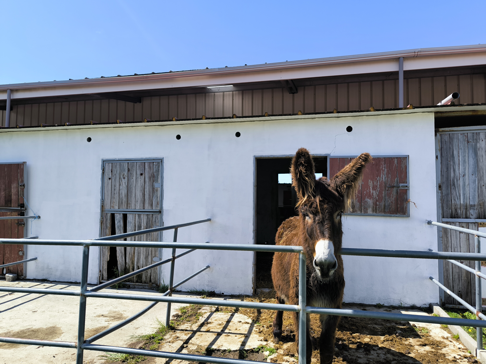

Onde o Cuidado e a Natureza se Encontram
"Através da cumplicidade com os animais e do ritmo sereno da quinta, ajudamos cada criança a florescer, transformando a interação animal num poderoso caminho de descoberta e equilíbrio emocional."




Onde a Natureza e o Bem-Estar se Encontram
Bem-vindos à Animalia, um refúgio dedicado ao crescimento e ao equilíbrio emocional no coração da natureza. O nosso espaço nasce da convicção de que o contacto direto com o mundo rural e a interação genuína com os animais são ferramentas poderosas de transformação e cura.
Aqui, oferecemos um ambiente seguro e tranquilo, onde cada recanto convida à serenidade e cada animal é um parceiro no processo de desenvolvimento de crianças e adultos.
Terapias Assistidas e Intervenção de Proximidade
Os nossos serviços de intervenção e terapia são desenhados de forma personalizada, aliando o rigor técnico à sensibilidade que a mediação animal permite. Trabalhamos não apenas a reabilitação, mas também a estimulação sensorial, a gestão emocional e a autoconfiança.
Seja através do cuidado com os nossos animais ou da vivência no ambiente da quinta, o objetivo é proporcionar experiências que deixem marcas positivas, promovendo a autonomia e a qualidade de vida.
Um Espaço de Partilha e Descoberta
Mais do que um local de intervenção, a Animalia é uma quinta pedagógica pensada para aproximar as famílias da essência da vida no campo. Através das nossas atividades, promovemos o respeito pela biodiversidade e o fortalecimento de laços afetivos.
Aqui, o tempo corre ao ritmo da natureza, permitindo que cada pessoa que nos visita possa desligar do quotidiano e redescobrir-se através da simplicidade e do afeto animal.